Setup Automated CI/CD pipeline using GitHub Actions and ArgoCD
This lab describes the process of how you could quickly create a multi node Kubernetes Envonment using KIND, which is a simple and quick way to set up a learning environment. Advantage it offers over minikube or docker desktop based kubernetes setup is its a multi node environment closer to the real world setup.
Prerequisites
You would require the following tools and accounts to get started with this lab.
Tools
Accounts
Prepare the Environment
Begin by installing kubectl and kind utilities.
To install kubectl client, refer to the official documentation here Install Tools | Kubernetes
Validate by running
kubectl version --client=true
kubectl version --client=true -o yaml
Install KinD (Kubernetes inside Docker) using operating specific instructions at kind – Quick Start .
Validate by running
kind
Launch Three Node Kubernetes Cluster with KIND
Download Cluster Configurations and Create a 3 Node Kubernetes Cluster as
git clone https://github.com/initcron/k8s-code.git
cd k8s-code/helper/kind/
kind create cluster --config kind-three-node-cluster.yaml
Validate
kind get clusters
kubectl cluster-info --context kind-kind
kubectl get nodes
kubectl get pods -A
[sample output]
root@demo:~# kubectl get nodes
NAME STATUS ROLES AGE VERSION
kind-control-plane Ready master 78s v1.19.1
kind-worker Ready <none> 47s v1.19.1
kind-worker2 Ready <none> 47s v1.19.1
Wait till you see all nodes in Ready state and you have a cluster operational.
Wait for a couple of minutes and then validate if the nodes are up and running.
Set up Nginx Ingress Controller for Traffic Routing
Install helm to setup Nginx Ingress Controller. To install helm version 3 on Linux or MacOS, you can follow following instructions.
curl https://raw.githubusercontent.com/helm/helm/master/scripts/get-helm-3 | bash
You could further refer to Official HELM Install Instructions for alternative options.
Verify the installtion is successful,
helm --help
helm version
Launch Nginx Ingress controller using helm as :
helm upgrade --install ingress-nginx ingress-nginx \
--repo https://kubernetes.github.io/ingress-nginx \
--namespace ingress-nginx --create-namespace \
--set controller.hostPort.enabled=true \
--set controller.service.type=NodePort \
--set controller.hostPort.ports.http=80 \
--set-string controller.nodeSelector."kubernetes\.io/os"=linux \
--set-string controller.nodeSelector.ingress-ready="true"
Check the pod for Nginx Ingress, if its running
kubectl get pods -n ingress-nginx
You may see the pod in pending state. Check why its pending by describing it.
Once you describe, you will see that its pending because it has a nodeSelector defined which is looking for a node with label set to ingress-ready="true".
Check the label on the current nodes
kubectl get nodes --show-labels
Add this lable to first of the worker nodes as
kubectl label node kind-worker ingress-ready="true"
validate
kubectl get nodes --show-labels
This time you should see the label added, and nginx ingress controller running, which can be validated using
kubectl get pods -n ingress-nginx --watch
Wait for the container for nginx ingress controller to be up. You could also validate by connecting to the IPADDRESS of your node where the cluster is beeng setup on port 80, where you should see **404 Not Found** error. This is the sign that nginx is set up as a ingress controller and looking for a request with hostname/path defined.
Setup ArgoCD
Install ArgoCD
kubectl create namespace argocd
kubectl apply -n argocd -f https://raw.githubusercontent.com/argoproj/argo-cd/stable/manifests/install.yaml
Reset admin password to password
# bcrypt(password)=$2a$10$rRyBsGSHK6.uc8fntPwVIuLVHgsAhAX7TcdrqW/RADU0uh7CaChLa
kubectl -n argocd patch secret argocd-secret \
-p '{"stringData": {
"admin.password": "$2a$10$rRyBsGSHK6.uc8fntPwVIuLVHgsAhAX7TcdrqW/RADU0uh7CaChLa",
"admin.passwordMtime": "'$(date +%FT%T%Z)'"
}}'
Source: reset-argo-password.sh Reference: argo-cd/faq.md at master · argoproj/argo-cd · GitHub
kubectl get all -n argocd
kubectl patch svc argocd-server -n argocd --patch \
'{"spec": { "type": "NodePort", "ports": [ { "nodePort": 32100, "port": 443, "protocol": "TCP", "targetPort": 8080 } ] } }'
source: patch_argo_svc.sh
kubectl get svc -n argocd
Find out the IP address for one of the nodes. One way to do so is to run the following command,
kubectl get nodes -o wide
Note IP address for one of the nodes and browse to https://NODEIP:32100
where, replace NODEIP with the actual.
You should be presented with the login page for ArgoCD as follows
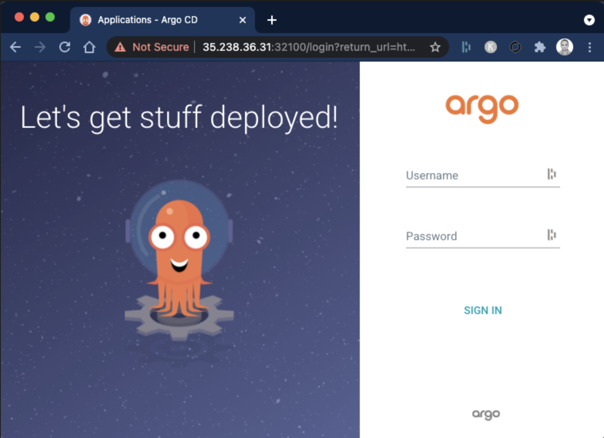
- username =.
admin - password =
password
Install ArgoCD CLI
You could refer to OS specific instructions to Install ArgoCD CLI for installing agocd utility.
Install Argo Rollouts
Install Argo Rollouts Controller and CRDs with ,
kubectl create namespace argo-rollouts
kubectl apply -n argo-rollouts -f https://github.com/argoproj/argo-rollouts/releases/latest/download/install.yaml
Validate with,
kubectl api-resources | grep -i argo
Optionally, you could install argo plugin for kubectl
On linux
cd ~
curl -LO https://github.com/argoproj/argo-rollouts/releases/latest/download/kubectl-argo-rollouts-linux-amd64
chmod +x ./kubectl-argo-rollouts-linux-amd64
sudo mv ./kubectl-argo-rollouts-linux-amd64 /usr/local/bin/kubectl-argo-rollouts
On Mac.
curl -LO https://github.com/argoproj/argo-rollouts/releases/latest/download/kubectl-argo-rollouts-darwin-amd64
chmod +x ./kubectl-argo-rollouts-darwin-amd64
sudo mv ./kubectl-argo-rollouts-darwin-amd64 /usr/local/bin/kubectl-argo-rollouts
And validate as,
kubectl argo rollouts version
Also install Kustomize by following the instructions in official documentation here.
Setup Argo Rollouts Dashboard
apply -n argo-rollouts -f https://raw.githubusercontent.com/argoproj/argo-rollouts/stable/manifests/dashboard-install.yaml
kubectl patch svc argo-rollouts-dashboard -n argo-rollouts --type='merge' -p '{"spec": {"type": "NodePort", "ports": [{"port": 3100, "targetPort": 3100, "nodePort": 30600}]}}'
Access it using http://NODEIP:30600/rollouts
Setup CI Pipeline with GitHub Actions
Fork the sample repo to get started.
This repo contains a simple application written in python that allows you to vote, along with Dockerfile, kubernetes manifests.
To build a Continuous Integration Pipeline, you would add the and GitHub Actions workflow to this repo. Create a GitHub Actions workflow pipeline at .github/workflows/ci.yml to setup the CI Process. Here is a sample code.
#.github/workflows/ci.yml
name: CI
on:
push:
branches:
- main
paths-ignore:
- 'Dockerfile'
- 'Jenkinsfile'
- 'chart/**'
pull_request:
branches:
- main
paths-ignore:
- 'Dockerfile'
- 'Jenkinsfile'
- 'chart/**'
jobs:
build:
runs-on: ubuntu-latest
steps:
- name: Checkout code
uses: actions/checkout@v2
- name: Set up Python
uses: actions/setup-python@v2
with:
python-version: '3.x'
- name: Install dependencies
run: pip install -r requirements.txt
unit-test:
runs-on: ubuntu-latest
needs: build
steps:
- name: Checkout code
uses: actions/checkout@v2
- name: Set up Python
uses: actions/setup-python@v2
with:
python-version: '3.x'
- name: Install dependencies
run: pip install -r requirements.txt
- name: Run tests
run: nose2
image-bp:
runs-on: ubuntu-latest
needs: unit-test
steps:
- name: Checkout code
uses: actions/checkout@v2
- name: Log in to DockerHub
uses: docker/login-action@v2
with:
username: ${{ secrets.DOCKER_USERNAME }}
password: ${{ secrets.DOCKER_PASSWORD }}
- name: Build and push Docker image
run: |
COMMIT_HASH=$(echo ${{ github.sha }} | cut -c1-7)
docker build -t ${{ secrets.DOCKER_USERNAME }}/vote:$COMMIT_HASH .
docker push ${{ secrets.DOCKER_USERNAME }}/vote:$COMMIT_HASH
Read this guide to understand this code better: GHA Code Explainer
To make this work after adding this code, all you need to do is, add the secret variables in your repository settings so that GitHub Actions can access your DockerHub account.
Adding DockerHub Secrets
You need to add DOCKER_USERNAME and DOCKER_PASSWORD as secrets in your GitHub repository settings. Here are the steps to add these secrets:
1 Go to your GitHub repository on the web.
2 Click on the Settings tab.
3 In the left sidebar, click on Secrets and variables and then Actions.
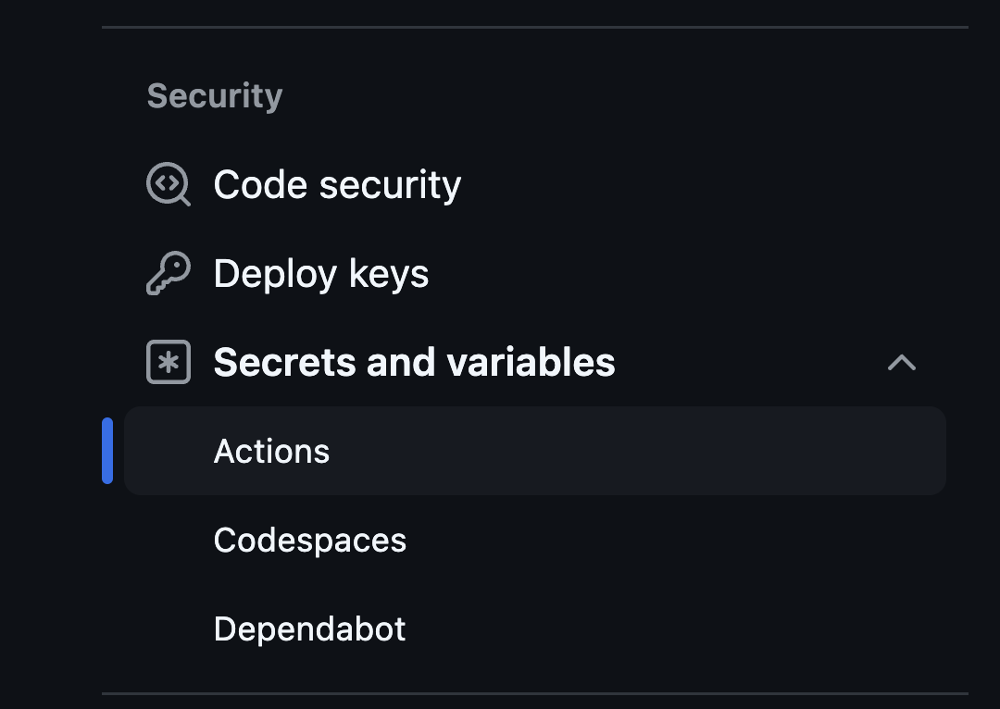
4 Click the New repository secret button.
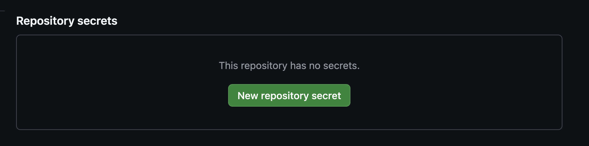
5 Add a new secret with the name DOCKER_USERNAME and set its value to your DockerHub username.
6 Add another new secret with the name DOCKER_PASSWORD and set its value to your DockerHub password.
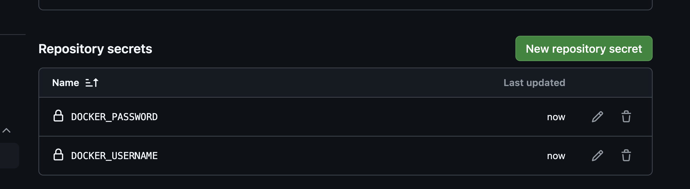
Once you have added these secrets, they will be available to your GitHub Actions workflow. The workflow file you provided already references these secrets correctly.
Make some changes to the application and push the changes to your forked repository. This will trigger the GitHub Actions workflow. You can view the workflow run in the Actions tab of your repository.
Setup Automated Deployments to Dev with ArgoCD
Ensure that you have forked the application repo which also contains the helm chart code.
Now to setup the automated deployment you should first create a Project and Repository. To do so, log in to ArgoCD, select settings from left menu and browse to Projects

Click on New Project -> Create and provide Project Name and Description as
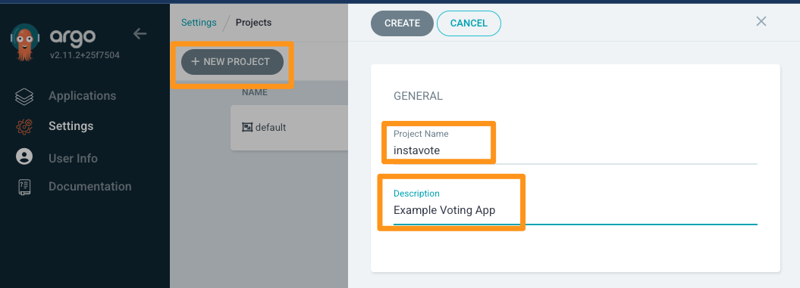
Proceed to create the project.
From Project Configuration page that you are redirected to, edit DESTINATIONS
- Select default cluster name from dropdown
- Select
in-clusteras Name - Add three entries, eacg for
dev,staging,prodNamespaces respectively - Save
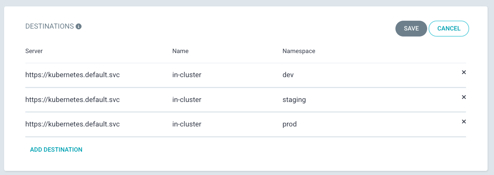
From settings from left menu and browse to Repositories
Select Connet Repo and provide the following configuration
- Via: HTTPS
- Type: git
- Project: instavote
- Repository URL: https://github.com/xxxx/vote.git (replace with actual)
- Username: GitHub Username (If Private Repo)
- Password: GitHub Password or Token (If Private Repo)
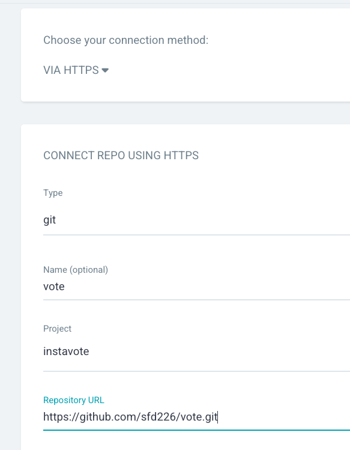
Finally click on Connect to add the repo.
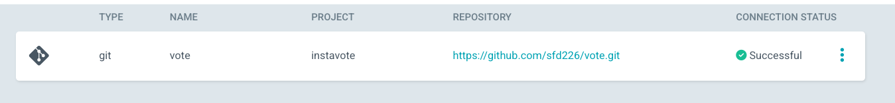
You should see connection status as Successful
Deploy to Dev with ArgoCD
Create a dev namespace
kubectl create namespace dev
Browse to ArgoCD web console and click on Create Application
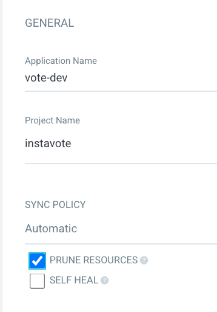
From General ,
- Application Name :
vote-dev - Project :
instavote - Sync Policy :
Automatic - Prune Resources: Checked
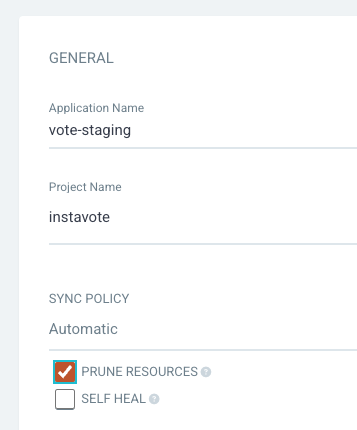
From Source,
- Repository URL :
Your Repo URL (https) - Revision :
main/HEAD - Path :
chart
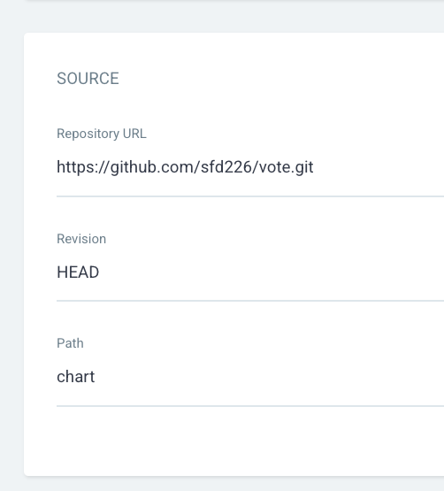
From Destination,
- Cluster URL : https://kubernetes.default.svc (default)
- Namespace :
dev
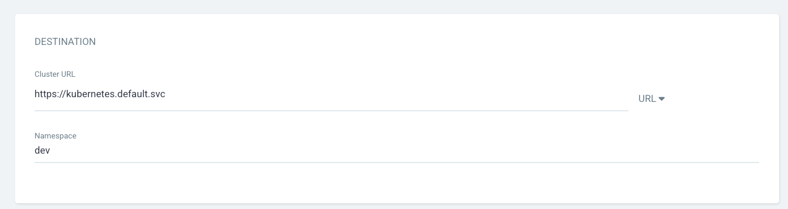
From Helm,
- Values Files :
values-dev.yamlfrom dropdown
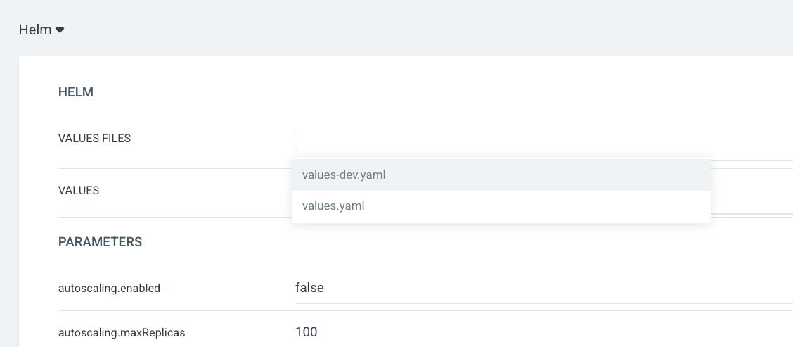
Click on CREATE button on the top
You shall see the application created on ArgoCD web console. 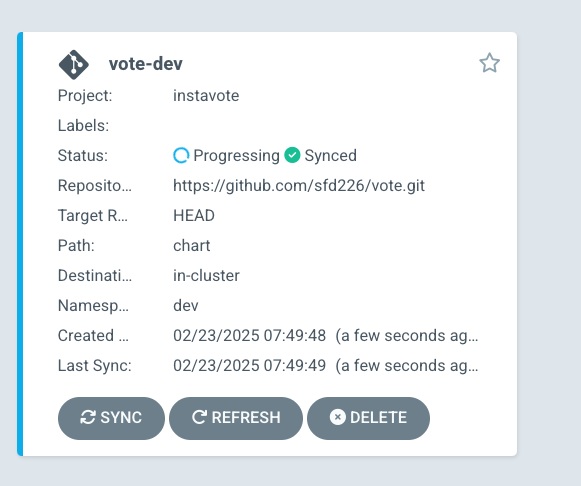
And can further examine the deployment status.
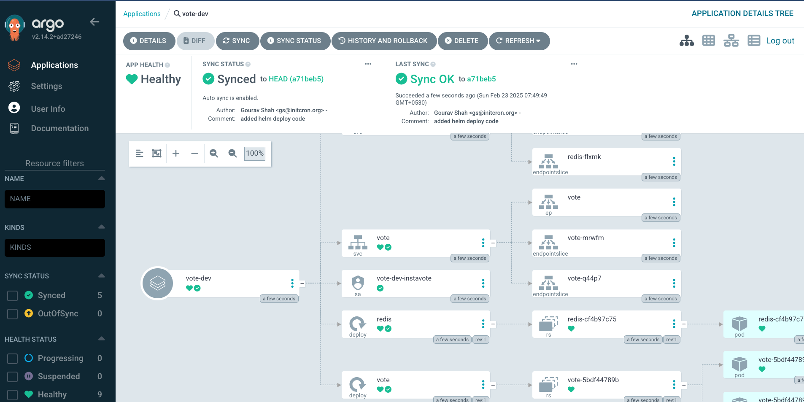
you could also validate from command line as,
kubectl get all -n dev
[sample output]
NAME READY STATUS RESTARTS AGE
pod/redis-cf4b97c75-hh65q 1/1 Running 0 2m21s
pod/vote-5bdf44789b-7c7kt 1/1 Running 0 2m21s
pod/vote-5bdf44789b-97hwf 1/1 Running 0 2m21s
NAME TYPE CLUSTER-IP EXTERNAL-IP PORT(S) AGE
service/redis ClusterIP 10.96.246.118 <none> 6379/TCP 2m21s
service/vote NodePort 10.96.250.9 <none> 80:30100/TCP 2m21s
NAME READY UP-TO-DATE AVAILABLE AGE
deployment.apps/redis 1/1 1 1 2m21s
deployment.apps/vote 2/2 2 2 2m21s
NAME DESIRED CURRENT READY AGE
replicaset.apps/redis-cf4b97c75 1 1 1 2m21s
replicaset.apps/vote-5bdf44789b 2 2 2 2m21s
Set up Argo Image Updater
Install Argo CD Image Updater as,
kubectl apply -n argocd -f https://raw.githubusercontent.com/argoproj-labs/argocd-image-updater/stable/manifests/install.yaml
Create a Secret with your GitHub credentials so that the image updater can discover and commit the image tags to git repository.
kubectl -n argocd create secret generic git-creds \
--from-literal=username=xxxxxx \
--from-literal=password=ghp_yyyyyy
Note : replace xxxxxx with your GitHub Username and ghp_yyyyyy with GitHub Access Token with write access to repository. If you do not already have token, create it from GitHub
Validate by running
kubectl get pods -n argocd
[expected output]
NAME READY STATUS RESTARTS AGE
argocd-image-updater-74ddc74d5d-j5wkg 1/1 Running 0 2m42s
Conencting CI with CD using Auto Image Updates
When you set up dev deployment, ArgoCD has created a application object for you. You would need to add a few annotations to it so that the Image Updater knows that this application is been marked for image auto update.
Observe the existing application created from ArgoCD UI as,
kubectl get application -n argocd
kubectl describe application -n argocd vote-dev
specifically observe the annotations
Annotations: <none>
To update this application with appropriate annotations create a patch file with the name and content given below,
File : argo-applications-vote-dev-patch.yaml
metadata:
annotations:
argocd-image-updater.argoproj.io/git-branch: main
argocd-image-updater.argoproj.io/image-list: myimage=xxx/vote
argocd-image-updater.argoproj.io/myimage.allow-tags: regexp:^[0-9a-f]{7}$
argocd-image-updater.argoproj.io/myimage.ignore-tags: latest, dev
argocd-image-updater.argoproj.io/myimage.update-strategy: newest-build
argocd-image-updater.argoproj.io/myimage.helm.image-name: vote.image.repository
argocd-image-updater.argoproj.io/myimage.helm.image-tag: vote.image.tag
argocd-image-updater.argoproj.io/myimage.force-update: "true"
argocd-image-updater.argoproj.io/write-back-method: git:secret:argocd/git-creds
argocd-image-updater.argoproj.io/write-back-target: "helmvalues:values-dev.yaml"
Where,
- Replace
xxxxxx/votewith your own repo in theargocd-image-updater.argoproj.io/image-listannotation.
Apply the above patch as,
kubectl patch application --type=merge -n argocd vote-dev --patch-file argo-applications-vote-dev-patch.yaml
Validate annotations are added,
kubectl describe application -n argocd vote-dev
[sample output]
Name: vote-dev
Namespace: argocd
Labels: <none>
Annotations: argocd-image-updater.argoproj.io/git-branch: main
argocd-image-updater.argoproj.io/image-list: myimage=initcron/initcron
argocd-image-updater.argoproj.io/myimage.allow-tags: regexp:^[0-9a-f]{7}$
argocd-image-updater.argoproj.io/myimage.force-update: true
argocd-image-updater.argoproj.io/myimage.helm.image-name: vote.image.repository
argocd-image-updater.argoproj.io/myimage.helm.image-tag: vote.image.tag
argocd-image-updater.argoproj.io/myimage.ignore-tags: latest, dev
argocd-image-updater.argoproj.io/myimage.kustomize.image-name: schoolofdevops/vote
argocd-image-updater.argoproj.io/myimage.update-strategy: newest-build
argocd-image-updater.argoproj.io/write-back-method: git:secret:argocd/git-creds
argocd-image-updater.argoproj.io/write-back-target: helmvalues:values-dev.yaml
API Version: argoproj.io/v1alpha1
Kind: Application
...
If everything goes well, within a few minutes, you should see a commit to the main branch of the vote-deploy repository that you have.
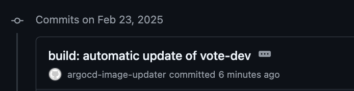
And a few minutes after that, you should see the dev deployment on ArgoCD pick up the newly updated image tag and deploy it.
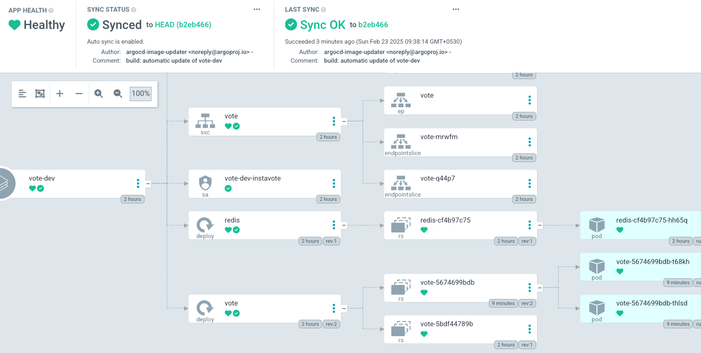
and also validate with
kubectl describe application -n argocd vote-dev
where you should see the following in the output status
Summary:
Images:
initcron/initcron:1065b15
redis:alpine
Sync:
Compared To:
Destination:
Namespace: dev
Server: https://kubernetes.default.svc
You could check the logs for the image updater which is running in argocd namespace by using a command similar to
kubectl logs -f -l "app.kubernetes.io/name=argocd-image-updater" -n argocd
[sample output]
time="2025-02-23T04:06:17Z" level=info msg="Committing 1 parameter update(s) for application vote-dev" application=vote-dev
time="2025-02-23T04:06:17Z" level=info msg="Initializing https://github.com/sfd226/vote.git to /tmp/git-vote-dev4083369370"
time="2025-02-23T04:06:17Z" level=info msg="git fetch origin main --force --prune --depth 1" dir=/tmp/git-vote-dev4083369370 execID=2bc9e
time="2025-02-23T04:06:18Z" level=info msg=Trace args="[git fetch origin main --force --prune --depth 1]" dir=/tmp/git-vote-dev4083369370 operation_name="exec git" time_ms=796.059257
time="2025-02-23T04:06:18Z" level=info msg="git checkout --force main" dir=/tmp/git-vote-dev4083369370 execID=5dbc4
time="2025-02-23T04:06:18Z" level=info msg=Trace args="[git checkout --force main]" dir=/tmp/git-vote-dev4083369370 operation_name="exec git" time_ms=8.651031
time="2025-02-23T04:06:18Z" level=info msg="git clean -ffdx" dir=/tmp/git-vote-dev4083369370 execID=85664
time="2025-02-23T04:06:18Z" level=info msg=Trace args="[git clean -ffdx]" dir=/tmp/git-vote-dev4083369370 operation_name="exec git" time_ms=1.851311
time="2025-02-23T04:06:18Z" level=info msg="Successfully updated the live application spec" application=vote-dev
time="2025-02-23T04:06:18Z" level=info msg="Processing results: applications=1 images_considered=1 images_skipped=0 images_updated=1 errors=0"
Thats all ! If you have gotten till here, congratulate yourself as you have just built a simplistic but completely working modern CI/CD Pipeline ! Hurray !!
You could test this complete CI/CD pipeline by making changes to the vote application and pushing it to the main branch.
You will see that,
1. When you me a change to the vote application, it will be automatically trigger GitHub Actions workflow which will build a new image and push it to the dev namespace.
2. The Argo Image Updater will detect the new image and update the image tag in the repository which containts the helm chart.
3. The ArgoCD will detect the change in the helm chart and deploy the new image to the dev namespace.
4. You could then test the application by accessing the URL of the dev namespace.